Cyclic Tour
Contents
set(0, 'DefaultFigurePosition', get(0,'screensize')); clc; clear; close all; addpath('provided_code');
Introduction
For a circular structure we to define a different neighborhood function. We can just pad the array of the units with additional units on the sides:
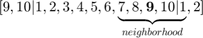
In this experiment we are supposed to use SOM to find an approximation to the TSP problem. In this regard, given a set of 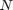 points (cities) and an array of topologycally-arranged units (circular-fashion) we use SOM in order to find a cycle that goes through each city. Ideally, we want to use units such that each of them clusters a specific city and hence a closed cycle is formed.
However this is not typically the case and some units might end up not clustering any of the given points.
For this experiment we need to set different parameters, which as proposed in the lab tutorial are set using trial and error methodology. These parameters are:
- Number of units (we are told to use 10 units, however we explored other configurations with more than 10 units which actually lead to "better" results.
- Number of epochs. We need enough iterations such that we can obtain a reasonable result. However, at a certain point the result remain unvariant. In particular, we note that most of the time the cycle oscillates periodically between two configurations, so it's better to switch to a different neighborhood size faster).
num_of_epochs = 150; epochs = 1:num_of_epochs;
- Learning rate 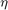. As the number of epochs increases, we decrease the learning parameter. In particular we decided to use an exponential decay given by
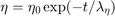
where 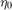 is the initial learning rate, 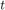 denotes the epoch number and 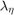 stands for the decay constant of the learning rate.
eta_0 = .8;
lambda_eta = 6*num_of_epochs/8;
eta = eta_0 * exp(-(epochs-1)/lambda_eta);
fprintf('eta_0 = %.2f, lambda_eta = %.2f', eta_0, lambda_eta);
eta_0 = 0.80, lambda_eta = 112.50
- Neighbourhood size (NS). We use the proposed definition of Neighbourhood. In particular, we define a maximum distance, say 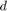, such that only units with indices 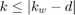 are considered within the neighbourhood of the winning unit 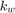. In this approach, the winning unit and the neighbouring units are updated equally, using 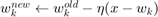 , where 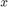 is a city's coordinates activating the wining unit and 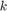 is the winning unit's and its neighbours unit's indices. Similarly to the learning rate, we decrease the size of the neighbourhood as the number of iterations increases. We also use an exponential decay given by
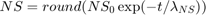
, where 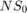 is the initial neighbour size, denotes the epoch number and 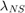 stands for the decay constant of the neighbour size.
neighborhood_size_0 = 4; lambda_ns = num_of_epochs/4; neighborhood_size = round(neighborhood_size_0 * exp(-(epochs-1)/lambda_ns)); fprintf('neighborhood_size_0 = %d, lambda_ns = %.2f', ... neighborhood_size_0, lambda_ns); figure(1); subplot(1,2,1); plot(eta); grid on; title('Learning Rate vs Epoch', 'Interpreter', 'latex', 'fontsize',16); xlabel('Number of Epoch', 'Interpreter', 'latex', 'fontsize',14); ylabel('$\eta$', 'Interpreter', 'latex', 'fontsize',14); subplot(1,2,2); stairs(neighborhood_size, 'r'); grid on; title('Neighbourhood size vs Epoch', 'Interpreter', 'latex','fontsize',16); xlabel('Number of Epoch', 'Interpreter', 'latex', 'fontsize',14); ylabel('$NS$', 'Interpreter', 'latex', 'fontsize',14);
neighborhood_size_0 = 4, lambda_ns = 37.50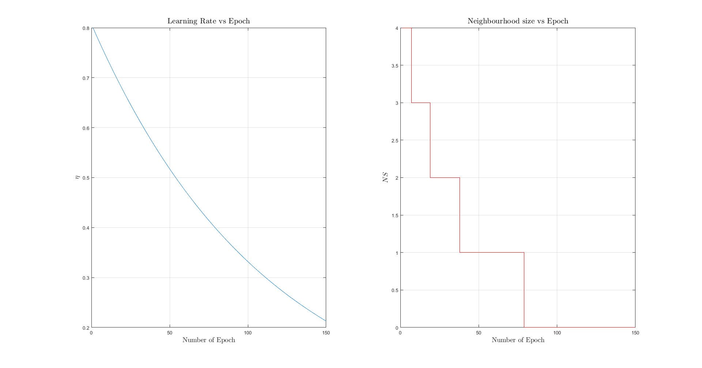
Besides this, we have to pay attention to the following consideration:
- Randomization of the order in which the cities are considered at every epoch (avoid possible correlations).
Experiment
A) Setup
cities; [num_of_cities, num_of_features] = size(city);
B1)Training with 10 units
Let us first consider the case where we use the same number of units as the number of cities.
num_of_units = 10;
weights = rand(num_of_units, num_of_features);
padded = [num_of_units - (neighborhood_size_0-1:-1:0), (1 : ...
num_of_units), (1:neighborhood_size_0)];
Prepare plot and generation of video and start the iterative algorithm
figure(2); dim = [0.02 0.68 0.3 0.3]; annotation('textbox',dim,'String',['$\eta_0 =$ ' num2str(eta_0) char(10)... '$\lambda_\eta = $ ' num2str(lambda_eta)],... 'FitBoxToText','on', 'fontsize',16, 'interpreter', 'latex'); vidObj = VideoWriter('10U.avi'); vidObj.FrameRate = 60; open(vidObj); set(gca,'nextplot','replacechildren'); for epoch = epochs eta = eta_0 * exp(-(epoch-1)/lambda_eta); neighborhood_size = round(neighborhood_size_0 * exp(-(epoch-1)/... lambda_ns)); for city_idx = randperm(num_of_cities) % Find winner unit city_coor = city(city_idx,:); diff = repmat(city_coor, num_of_units, 1) - weights; [~, winning_unit] = min(sum(diff.^2, 2)); % Neighbors neighbors_idx = padded(winning_unit+neighborhood_size_0... -neighborhood_size:winning_unit+neighborhood_size_0... +neighborhood_size); % Update mask update_function = zeros(num_of_units, num_of_features); update_function(neighbors_idx, :) = 1; % Update weights weights_old = weights; weights = weights_old + update_function .* (eta * diff); % Plotting tour = [weights; weights(1,:)]; plot(tour(:,1),tour(:,2),'c-o', 'LineWidth',1); hold on; plot(weights(winning_unit,1),weights(winning_unit,2),'.b',... 'MarkerSize', 35); plot(weights(neighbors_idx,1),weights(neighbors_idx,2),'.g-',... 'MarkerSize', 20, 'LineWidth',2); plot(city(:,1),city(:,2),'.m','MarkerSize', 15); plot(city(city_idx,1),city(city_idx,2),'.r','MarkerSize', 35); title(sprintf(... 'Number of units: %4d, Epoch: %4d, Neighborhood size: %2d, learning rate = %.2f', ... num_of_units, epoch, neighborhood_size, eta), 'Interpreter', ... 'latex', 'Fontsize', 16); xlabel('$x$', 'Interpreter', 'latex', 'Fontsize', 13); ylabel('$y$', 'Interpreter', 'latex', 'Fontsize', 13); hold off; pause(0.000001); frame_index = num_of_cities*(epoch-1)+city_idx; currFrame = getframe(gcf); writeVideo(vidObj,currFrame); end if isequal(weights_old, weights) fprintf('Convergence at epoch %3d', epoch); break; end end close(vidObj);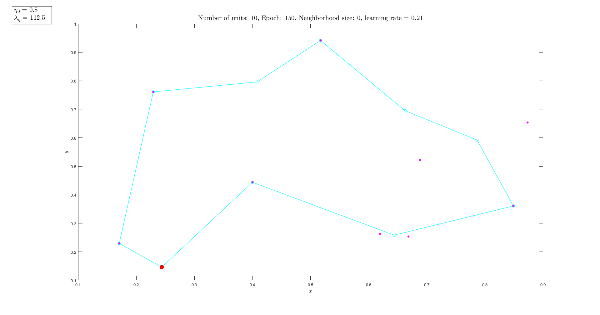
B2) Training with 20 units
The results obtained with 10 units are close to the optimal solution, however, sometimes some of the units do not cluster any point leaving the cycle incomplete (we do not visit some cities). In this regard, we now increase the number of units, such that we can ensure that all cities are visited. Once finished, we can obtain the order of visited cities by only looking at the units that cluster a given point.
num_of_units = 20;
weights = rand(num_of_units, num_of_features);
padded = [num_of_units - (neighborhood_size_0-1:-1:0), (1 : ...
num_of_units), (1:neighborhood_size_0)];
Prepare plot and generation of video and start the iterative algorithm
figure(3); annotation('textbox',dim,'String',['$\eta_0 =$ ' num2str(eta_0) char(10)... '$\lambda_\eta = $ ' num2str(lambda_eta)],... 'FitBoxToText','on', 'fontsize',16, 'interpreter', 'latex'); vidObj = VideoWriter('20U.avi'); vidObj.FrameRate = 60; open(vidObj); set(gca,'nextplot','replacechildren'); for epoch = 1:num_of_epochs eta = eta_0 * exp(-(epoch-1)/lambda_eta); neighborhood_size = round(neighborhood_size_0 * exp(-(epoch-1)/lambda_ns)); for city_idx = randperm(num_of_cities) % Find winner unit city_coor = city(city_idx,:); diff = repmat(city_coor, num_of_units, 1) - weights; [~, winning_unit] = min(sum(diff.^2, 2)); % Neighbors neighbors_idx = padded(winning_unit+neighborhood_size_0... -neighborhood_size:winning_unit+neighborhood_size_0... +neighborhood_size); % Update mask update_function = zeros(num_of_units, num_of_features); update_function(neighbors_idx, :) = 1; weights_old = weights; weights = weights_old + update_function .* (eta * diff); % Plotting tour = [weights; weights(1,:)]; plot(tour(:,1),tour(:,2),'c-o', 'LineWidth',1); hold on; plot(weights(winning_unit,1),weights(winning_unit,2),'.b','MarkerSize', 35); plot(weights(neighbors_idx,1),weights(neighbors_idx,2),'.g-','MarkerSize', 20, 'LineWidth',2); plot(city(:,1),city(:,2),'.m','MarkerSize', 15); plot(city(city_idx,1),city(city_idx,2),'.r','MarkerSize', 35); title(sprintf(... 'Number of units: %4d, Epoch: %4d, Neighborhood size: %2d, learning rate = %.2f', ... num_of_units, epoch, neighborhood_size, eta), 'Interpreter', ... 'latex', 'Fontsize', 16); xlabel('$x$', 'Interpreter', 'latex', 'Fontsize', 13); ylabel('$y$', 'Interpreter', 'latex', 'Fontsize', 13); hold off; % pause(0.000001); frame_index = num_of_cities*(epoch-1)+city_idx; currFrame = getframe(gcf); writeVideo(vidObj,currFrame); end if (isequal(weights_old, weights) && isequal(weights, city)) fprintf('Convergence at epoch %f', epoch); break; end end close(vidObj);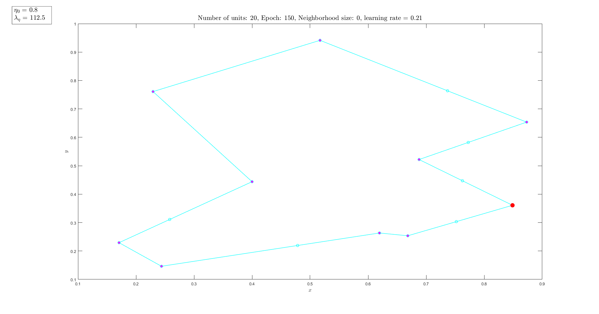
Conclusions
- We could define a convergence criteria, in order to stop the iterations once a solution is found (i.e. the cycle does not change).
- Number of units should be greater than the number of points.
- Decrease of learning rate and neighbourhood size result in a huge performance increase.
- Alternative neighbourhood definitions could be explored, for instance using Gaussian Neighbourhood Level (as we will see in the following exercise).
close all;